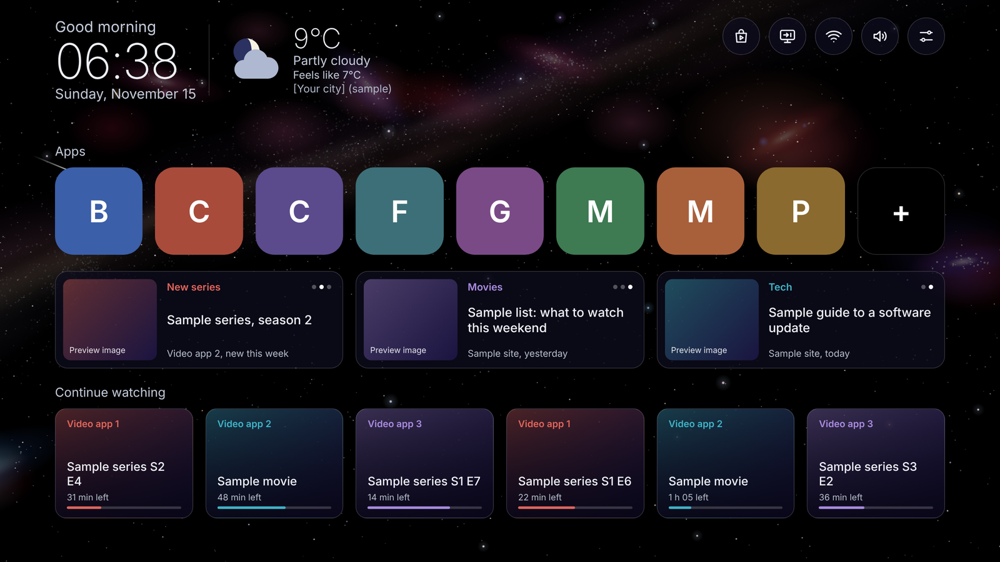

Stardrift TV Launcher
A calm, ad free home screen for Google TV. Free and open source.

Manual (PDF)How the launcher works, with screenshots. Try the interactive mockupRuns in your browser with sample content. Nothing is sent anywhere. Source codeGPL-3.0.